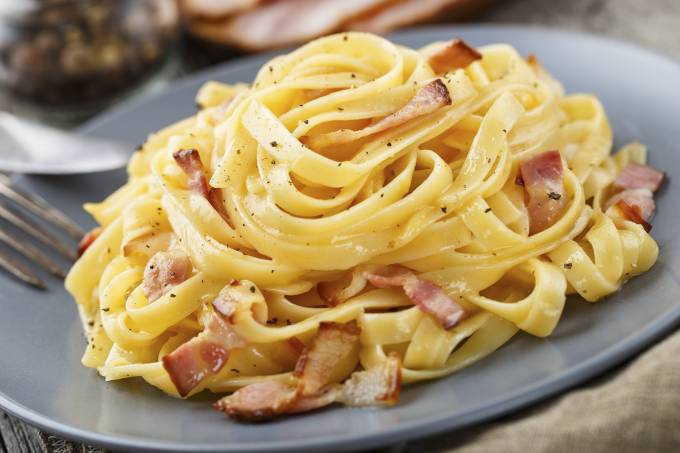

Carbonara

A receita de macarrão à carbonara é uma das mais clássicas receitas italianas.
Muito simples e prático de preparar, o macarrão à carbonara leva poucos ingredientes e é muito saboroso.
Sendo consumido desde a Roma Antiga, dizem as lendas que seu “carbonara” vem da palavra "carbone",
que significa carvão em italiano, pois era consumido por preparadores de carvão nos alpes da Itália.
Ingredientes
- bacon picado a gosto
- queijo ralado a gosto
- 3 ovos
- sal
- pimenta-do-reino a gosto
- macarrão de sua escolha (espaguete, fusili,etc.)
- creme de leite se quiser dar um toque diferente à receita
Modo de Preparo
- Frite bem o bacon, até ficar crocante (pode-se adicionar salame picado.
- Coloque o macarrão para cozinhar em água e sal.
- No refratário onde será servido o macarrão, bata bem os ovos com um garfo.
- Tempere com sal e pimenta a gosto, e junte o queijo ralado, também a gosto.
- Quando o macarrão estiver pronto, escorra e coloque (bem quente) sobre a mistura de ovos, misture bem.
- O calor da massa cozinha os ovos.
- Coloque o bacon, ainda quente, sobre o macarrão e sirva.